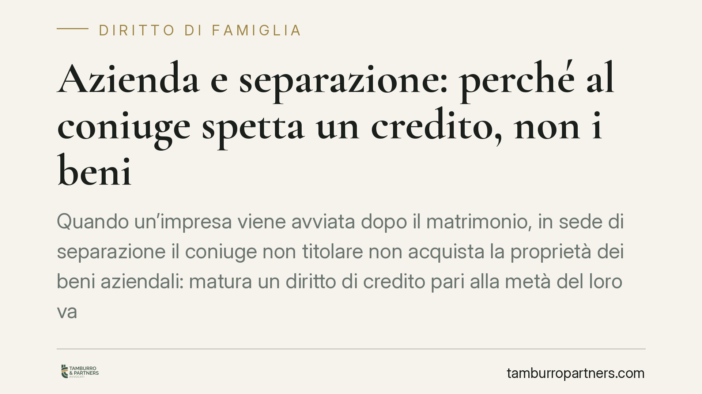

Azienda e separazione: perché al coniuge spetta un credito, non i beni
Quando un'impresa viene avviata dopo il matrimonio, in sede di separazione il coniuge non titolare non acquista la proprietà dei beni aziendali: matura un diritto di credito pari alla metà del loro valore netto. È il principio della comunione de residuo, chiarito dalle Sezioni Unite nel 2022. Vediamo cosa significa in concreto e come incide sulla continuità dell'azienda.

Il punto di partenza: comunione immediata o differita?
Non tutti i beni dei coniugi entrano in comunione allo stesso modo. Il Codice civile distingue due regimi.
L'art. 177 c.c. disciplina la comunione immediata: i beni acquistati durante il matrimonio (salvo quelli personali) diventano comuni nel momento stesso dell'acquisto. Qui la contitolarità è piena e reale fin da subito.
L'art. 178 c.c. riguarda invece l'azienda gestita da uno solo dei coniugi e costituita dopo il matrimonio. Per questi beni opera la cosiddetta comunione de residuo: la contitolarità non è immediata, ma si verifica solo al momento dello scioglimento della comunione (separazione, divorzio, morte). Finché il matrimonio è in corso, l'azienda resta nella piena disponibilità del coniuge imprenditore.
Diritto reale o diritto di credito? La scelta delle Sezioni Unite
Per anni ci si è chiesti che natura abbia la posizione del coniuge non imprenditore allo scioglimento: diventa comproprietario dei beni aziendali (diritto reale) oppure vanta soltanto una pretesa economica (diritto di credito)?
Le Sezioni Unite della Cassazione, con la sentenza n. 15889 del 17 maggio 2022, hanno optato per la natura obbligatoria della comunione de residuo. Il coniuge non titolare non acquista la proprietà dei beni e dei frutti aziendali, ma un diritto di credito pari alla metà del loro valore netto, maturato al momento della cessazione del regime.
La differenza non è tecnicismo. Un diritto reale avrebbe reso il coniuge non imprenditore comproprietario di macchinari, magazzino, avviamento, con potenziale paralisi gestionale. Il diritto di credito, invece, separa la titolarità dell'impresa dal suo valore economico: l'azienda resta a chi la conduce, l'altro coniuge ottiene una somma di denaro equivalente alla propria quota.
Perché conta: la continuità d'impresa
L'impostazione tutela un interesse preciso: la continuità dell'attività economica. Trasformare un ex coniuge in socio o comproprietario forzato, spesso privo di competenze gestionali e in posizione di conflitto, avrebbe effetti distorsivi su dipendenti, fornitori e rapporti bancari.
Con il diritto di credito, l'imprenditore conserva la governance e la responsabilità dell'impresa. L'altro coniuge non resta a mani vuote: ottiene la metà del valore, ma sotto forma di somma liquidabile, non di quote o beni.
Come si calcola il valore
Il credito si commisura al valore netto dei beni aziendali, cioè al valore dei cespiti (immobili, attrezzature, scorte, avviamento, crediti) dedotte le passività (debiti, esposizioni bancarie, obbligazioni verso terzi).
Due aspetti sono decisivi.
Il momento di cristallizzazione. Il valore si fotografa al momento dello scioglimento della comunione, non a quello successivo della liquidazione. Eventuali incrementi o cali successivi, in linea di principio, non modificano la base di calcolo.
La valutazione in concreto. La quantificazione passa quasi sempre da una stima tecnica, spesso affidata a un consulente contabile. Il rischio di contenzioso si annida proprio qui: nella determinazione dell'avviamento e nel perimetro delle passività da dedurre.
Implicazioni pratiche
Per il coniuge imprenditore, il principio offre stabilità: l'azienda non viene frammentata né esposta a cogestione. Resta però l'onere di liquidare una somma che, per imprese di valore, può essere rilevante e richiedere pianificazione finanziaria.
Per il coniuge non titolare, il diritto di credito è una tutela economica, ma comporta la rinuncia a ogni pretesa sui beni. Diventa cruciale che la stima sia corretta e che i tempi e le modalità di pagamento siano chiari.
Cosa fare in concreto
- Ricostruire la cronologia dell'impresa: verificare se l'azienda sia stata costituita prima o dopo il matrimonio, perché solo nel secondo caso opera l'art. 178 c.c.
- Richiedere una valutazione indipendente dei beni aziendali, affidata a un professionista contabile terzo, per fissare un valore difendibile.
- Verificare con attenzione le passività, perché incidono direttamente sulla base di calcolo del credito: sottovalutarle o gonfiarle sposta in modo significativo l'importo.
- Definire tempi e modalità di pagamento del credito, valutando soluzioni dilazionate compatibili con la sostenibilità finanziaria dell'impresa.
- È opportuno affrontare la liquidazione dei rapporti economici con una strategia unitaria, coordinando gli aspetti civilistici, contabili e fiscali anziché trattarli in sequenza scollegata.
*Nota sulle fonti: il principio di diritto qui illustrato è consolidato a partire da Cass. Sez. Un. n. 15889/2022. Riferimenti a pronunce successive su casi analoghi vanno verificati caso per caso prima di trarne conseguenze operative.*
---
Contributo informativo a cura di Tamburro & Partners - Avv. Giuseppe Tamburro. Non costituisce parere legale.
Ogni famiglia ha il suo equilibrio.
Separazione, divorzio, affidamento, assegno: se vuoi un confronto riservato su una specifica situazione, scrivi allo studio. Ti rispondiamo entro un giorno lavorativo.